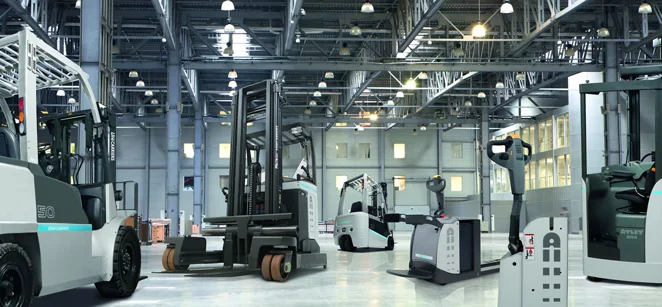

Сервис под ключ

Сервис «под ключ» представляет собой комплекс услуг по организации складского хранения и включает:
- разработку проекта оснащения склада стеллажным оборудованием
- поставку стеллажного оборудования
- монтаж стеллажного оборудования
- подбор оптимальной техники и складской механизации
- поставку техники и оборудования
- сервисное и гарантийное обслуживание техники и оборудования в процессе всего срока эксплуатации.
Сервис «под ключ» дает клиенту следующие преимущества:
- конечный результат сотрудничества представляет собой не отдельный продукт или услугу, а целый спектр работ по разработке, подбору, покупке, монтажу и установке
- отсутствие необходимости согласовывать технические и организационные составляющие между поставщиками разной продукции
- обеспечение непрерывности производственного процесса; - оптимальный подбор техники и стеллажного оборудования, что позволяет максимально эффективно использовать имеющееся пространство
- значительное снижение стоимости комплексного продукта.